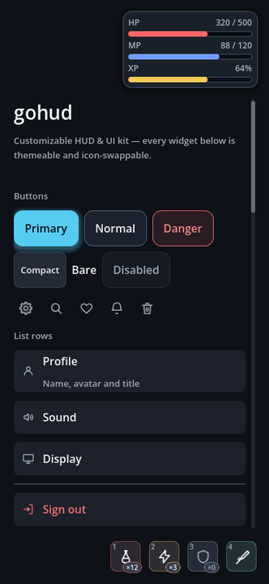
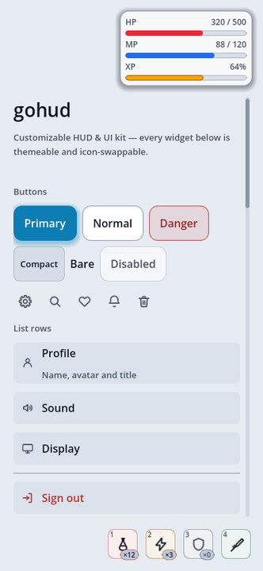
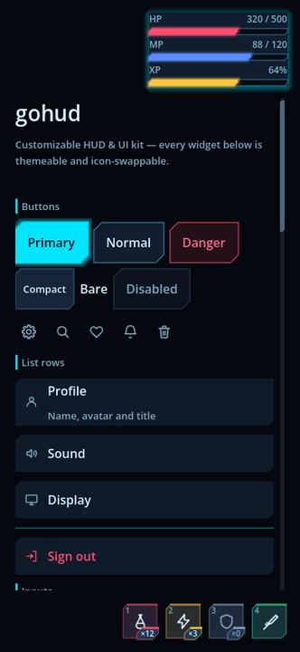
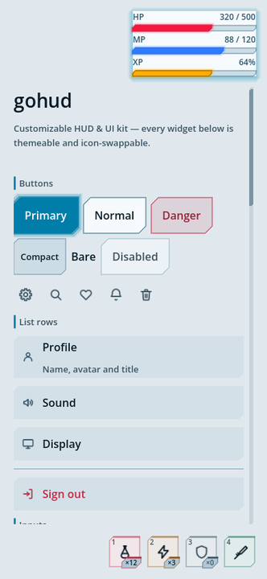
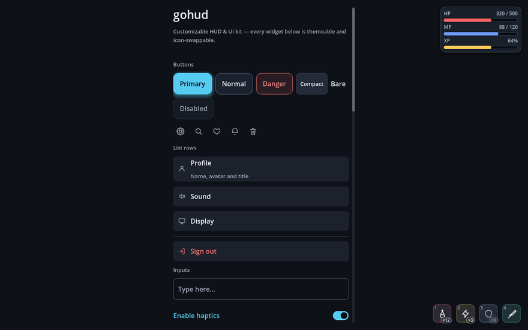

What it takes off your hands
What costs the most time in game UI is not the shape of a button — it is everything that drifts apart between devices. gohud handles that drift in one place.
Every measurement is a token
Spacing, corners and text sizes are called by name, not written as numbers. Swap the theme and the whole screen moves with it.
Visible size ≠ pressable size
A close button looks 36dp but its touch target is 48dp. Where crowded slots overlap, the one whose centre is nearer takes the press.
Notches and keyboards
HUD pieces sit inside the safe area, and an input rises above the virtual keyboard when it appears.
Back closes one thing
Escape and Android Back close only the topmost surface. Stacked windows do not vanish together.
Notices never steal input
Press through a snackbar and the button underneath receives it. Focus is not taken either.
Icons are asked for by name
Widgets only know GoIconSet.CLOSE. Swap the set and every drawing changes without touching a line of code.
Install
Extract into your project so you get res://addons/gohud/. That is all.
git submodule add <gohud-repository-url> addons/gohud
git submodule update --initQuick start
A confirmation you await
var dialogs := GoDialogs.new()
add_child(dialogs)
if await dialogs.confirm("Delete save", "This cannot be undone."):
delete_save()A bottom sheet with a sticky search field and footer
var sheet := GoSheet.new()
add_child(sheet)
sheet.open("Inventory")
sheet.toolbar().add_child(GoStyle.line_edit("Search…"))
sheet.toolbar().visible = true
sheet.footer().add_child(GoStyle.button("Close", sheet.close, GoStyle.Tone.PRIMARY))
sheet.footer().visible = truebody and a long list pushes them off screen. footer() is always visible.
A HUD corner
var corner := GoHudAnchor.new()
corner.spot = GoHudAnchor.Spot.TOP_LEFT
corner.landscape_spot = GoHudAnchor.Spot.TOP_RIGHT
add_child(corner)
var hp := GoBar.new()
hp.label_text = "HP"
hp.ink = GoUi.color(GoTheme.DANGER_FILL)
corner.add_child(hp)
hp.set_values(320, 500)Change the look — colours and shape
A Theme can only restyle what the engine draws. Rounded corners are the only corners StyleBoxFlat has, and the joystick, quick slots and coach mark are drawn by code — so a theme alone can never change their shape. gohud therefore ships presets.
GoUi.use_preset(GoThemePresets.SCIFI_DARK) # theme, skin and icons together
default_dark — rounded corners, soft blue accent
default_light — same shapes, light palette
scifi_dark — chamfered corners, cyan neon
scifi_light — same angular shapes, blueprint paletteAll four are the same gallery screen. Not a line of code differs — only the preset name. Button corners, toggle shapes, list rows and input borders all move together.
The same screen on a phone and on a desktop
Those four are a phone in portrait. Below is the same code at 1280×800 — the content stops at a readable width (480dp) and centres, while the HUD stays in the corners. The form steps around floating HUD pieces, but does not move when it is already clear of them: pushing anyway would throw the content off-centre on a wide screen.

default_dark · 1280×800
scifi_dark · 1280×800
Pick one from Project Settings → Gohud → Theme → Preset, or set GoConfig.preset.
Filling in theme, skin or icons explicitly wins over the
preset, so you can take a preset and override just one of them.
Skins — where a Theme cannot reach
A skin owns the joystick, quick-slot faces, the coach-mark ring, chips, skeletons, alerts, dividers and section headings. Subclass it and override only what you want changed.
class_name MySkin extends GoSkin
func slot_box(accent: Color, lit: bool) -> StyleBox:
var box := GoStyleBoxCut.new()
box.bg_color = accent
box.cut = 6.0
box.edge_color = accent
return box| Class | Shapes it can make |
|---|---|
GoStyleBoxCut | Diagonally cut corners (chamfer), one thickened accent edge, an outer glow |
GoStyleBoxBracket | Corner marks only, without enclosing the content |
Both serialise into a Theme resource — which is what lets a theme change shape, not just colour.
GoStyle.box() always returns a StyleBoxFlat, because calling code
receives it and adjusts bg_color or corner_radius. Use
GoStyle.surface() when a custom shape has to survive.
Readability is measured, not eyeballed
"Pretty" is taste; "legible" can be measured. Faint grey text looks fine on a good monitor and disappears on a phone in daylight — picking by eye guarantees it eventually.
python3 addons/gohud/tools/check_contrast.pyEvery colour pair and every button state's label over the panel it sits on is measured against WCAG. Translucent colours are composited over their real backdrop first — measuring them directly reports a better ratio than the screen shows.
Text colours are therefore derived, not chosen: the builder takes the palette entry as a starting point and pushes its lightness until it clears the threshold on every surface it can land on. Change the palette and the contrast follows.